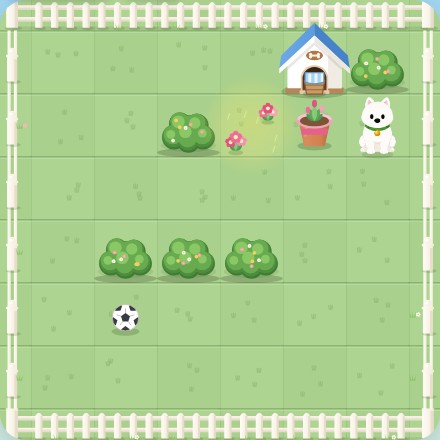

인디 게임 스튜디오
Journey365
작은 발견이 이어지는 여정
익숙한 일상 속 작은 발견을 게임으로 만드는 인디 스튜디오입니다. 지나치기 쉬운 순간을 다른 시선으로 바라보며, 소소한 재미가 시작되는 이야기를 찾습니다. 함께한 시간이 오래 기억될 수 있도록 작은 아이디어를 차근차근 게임으로 만들어 갑니다.
개발 중인 이야기 만나기 ↓
개발 중인 게임
Walk with Max
개발 중강아지 Max가 할아버지의 마당일과 밭일을 돕는 2D 소코반 퍼즐입니다. 한 걸음의 순서를 고민하며 퍼즐을 풀고, 마당과 밭을 함께 가꾸어 갑니다. 할아버지는 퍼즐 밖에서 Max의 성과에 반응하며 둘의 이야기를 이어 갑니다.
2D Sokoban Puzzle여정에 담는 마음
Journey익숙한 일상에서도 새로운 재미를 발견합니다. 같은 풍경을 조금 다르게 바라보는 시선에서 다음 이야기가 시작됩니다.
365작은 시도와 배움을 하루하루 쌓아 갑니다. 서두르기보다 한 걸음씩 다듬으며, 꾸준히 이어지는 변화를 소중히 여깁니다.
Together각자의 속도로 걷는 여정에는 서로 만나는 순간이 있습니다. 게임을 만드는 시간과 즐기는 시간이 연결되어, 함께한 기억으로 남기를 바랍니다.